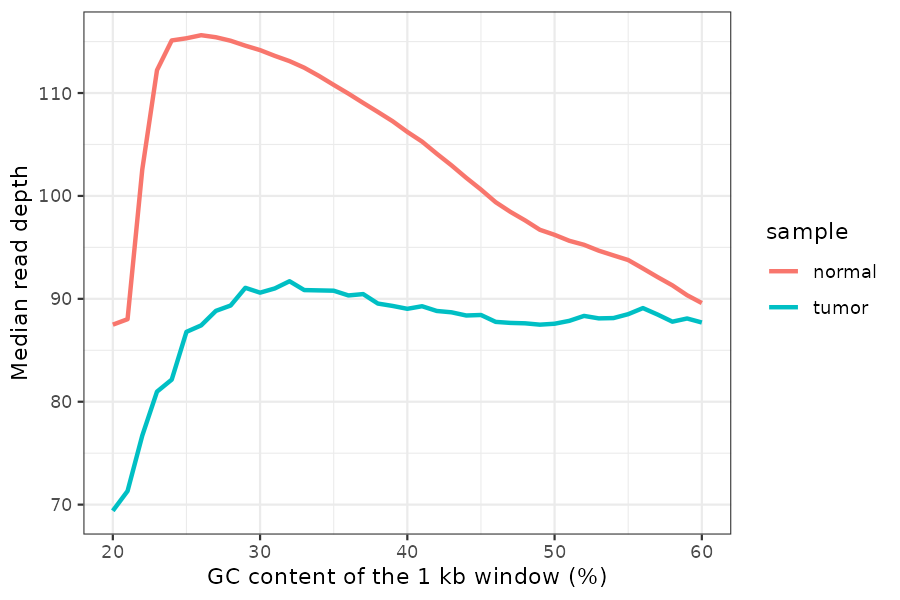
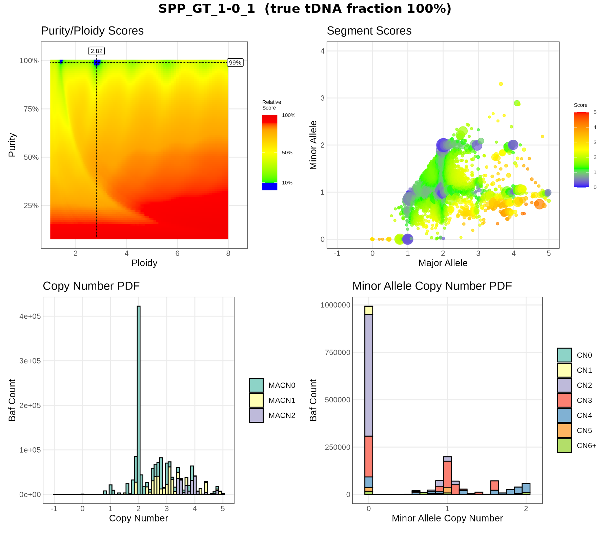
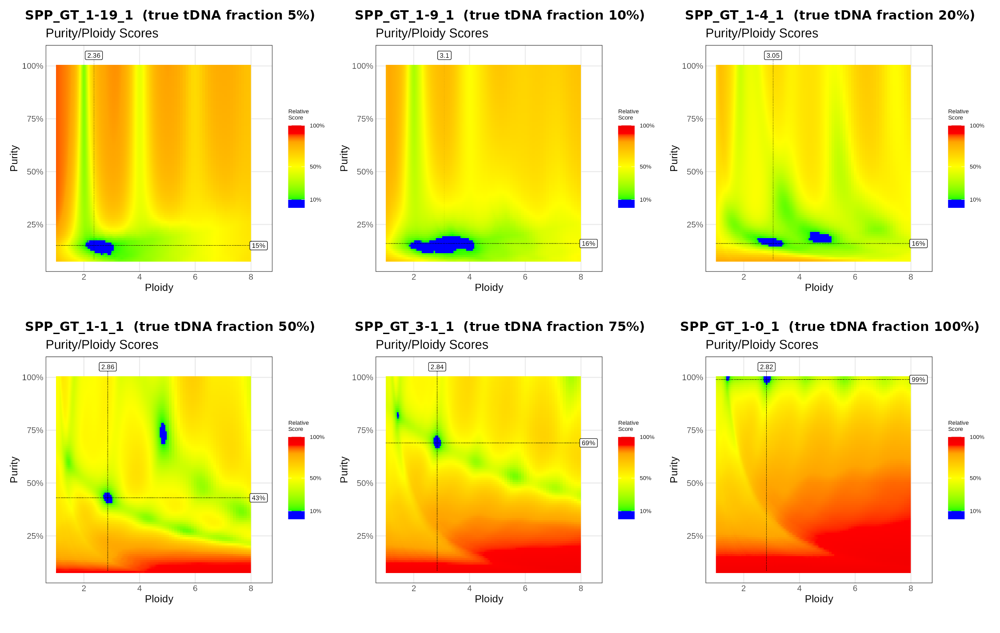
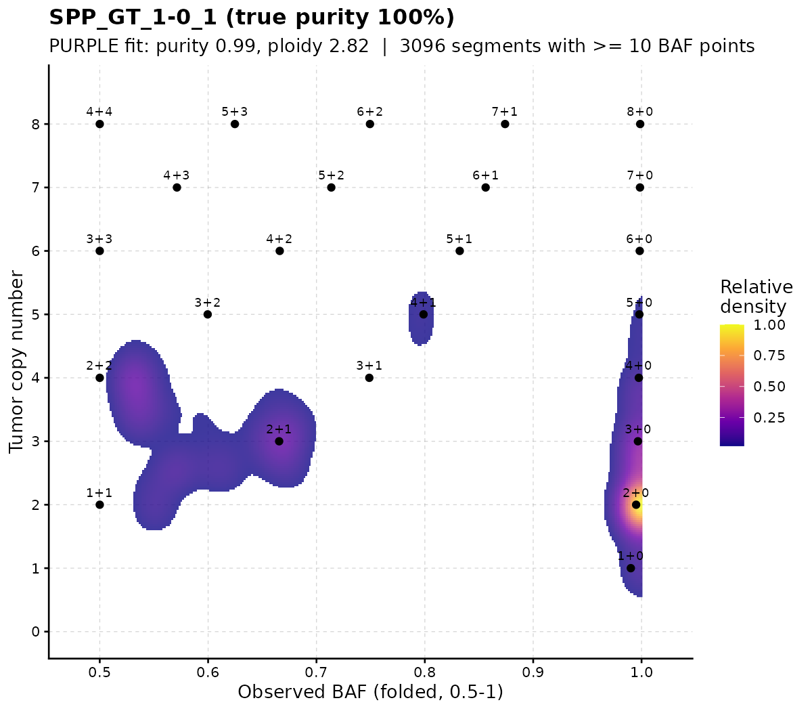
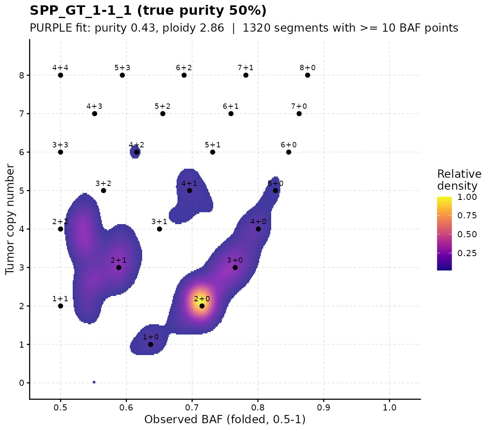
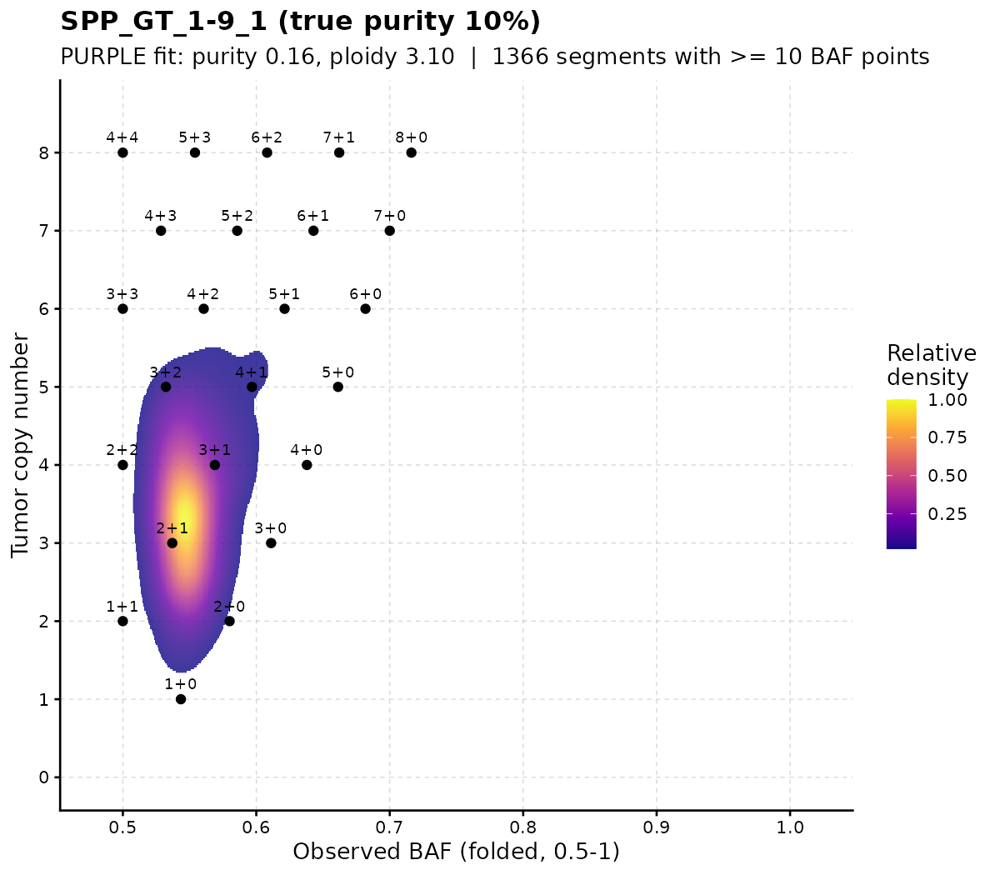
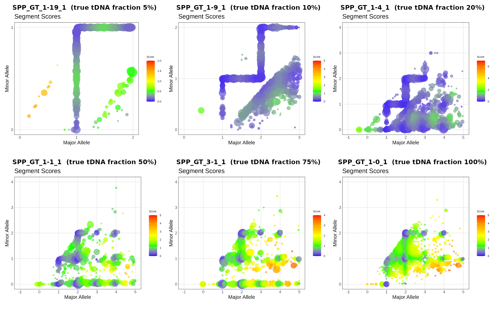
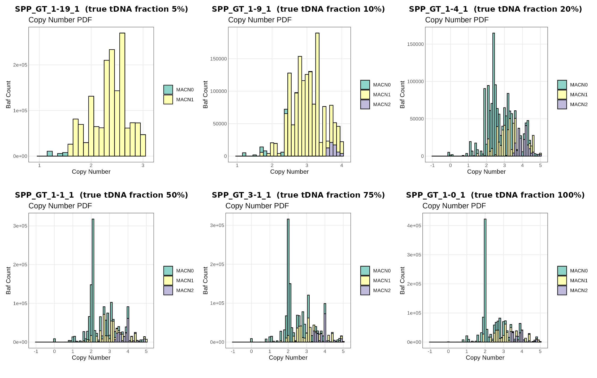
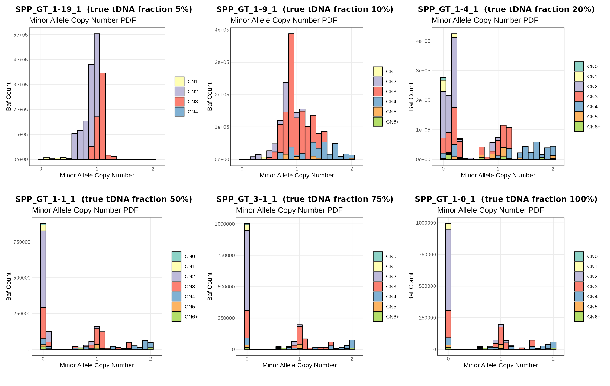

Analyze the purple results
Check the quality of each PURPLE run and compare the estimated purity with the truth.
Understand how PURPLE chooses purity and ploidy.
Read the raw signals (read depth and B-allele frequency) and the fitted copy number.
Find genes that are gained, lost, deleted or show loss of heterozygosity (LOH).
Plot any gene or chromosome with all the evidence in one figure.
Key concepts (read this first)
| Term | Meaning |
|---|---|
| Copy number (CN) | How many copies of a DNA segment a cell has. Normal human cells have 2 (one from each parent). |
| Purity | Fraction of cells in the sample that are tumor cells. The rest are normal cells with CN = 2. |
| Ploidy | Average copy number across the tumor genome. HCC1395 is about 2.8, i.e. near-triploid. |
| Major / minor allele CN | The two parental copies are counted separately. A segment with CN 3 can be 2+1 (major 2, minor 1) or 3+0 (major 3, minor 0). |
| BAF (B-allele frequency) | At a heterozygous SNP (A/B), the fraction of reads that carry the B allele. It is 0.5 in a normal cell. |
| LOH (loss of heterozygosity) | One parental allele is lost (minor CN = 0). The BAF then moves to 0 or 1. If the remaining allele is duplicated, CN stays 2: copy-neutral LOH (cnLOH). |
| Depth ratio | Tumor read depth divided by normal read depth in a window. It goes up with gains and down with losses. |
PURPLE combines two independent signals:
- COBALT measures the depth ratio in 1 kb windows → tells us the total copy number.
- AMBER measures the BAF at germline heterozygous SNPs → tells us how the copies are split between the two alleles.
Both signals are diluted by normal cells. With purity p, a segment with tumor copy number CN and minor-allele copy number m is expected to show:
\[\text{depth ratio} =\frac{p \cdot CN + (1-p)\cdot 2}{p \cdot \text{ploidy} + (1-p)\cdot 2}\qquad\text{BAF} =\frac{p \cdot m + (1-p)\cdot 1}{p \cdot CN + (1-p)\cdot 2}\]
PURPLE searches for the purity and ploidy that make these predictions match the observed data best, across the whole genome.
Let’s see what these formulas mean in practice. The table shows the expected signal of four common events at different purities (tumor ploidy fixed at 2.8):
library(tidyverse)
expected_signal <- function(purity, cn, minor, ploidy = 2.8) {
tibble(
depth_ratio = (purity * cn + (1 - purity) * 2) / (purity * ploidy + (1 - purity) * 2),
BAF = (purity * minor + (1 - purity) * 1) / (purity * cn + (1 - purity) * 2)
)
}
events <- tribble(
~event, ~cn, ~minor,
"Normal (1+1)", 2, 1,
"Deep deletion (0+0)", 0, 0,
"Copy-neutral LOH (2+0)", 2, 0,
"Gain (3+1)", 4, 1
)
crossing(events, purity = c(1, 0.5, 0.2, 0.05)) %>%
mutate(expected_signal(purity, cn, minor)) %>%
mutate(across(c(depth_ratio, BAF), ~ round(.x, 2))) %>%
arrange(event, desc(purity))What to notice
- At purity 1, a deep deletion has depth ratio 0, and cnLOH has BAF 0 (or 1): very clear signals.
- At purity 0.05, every event gives a depth ratio close to the genome average and a BAF close to 0.5. The tumor signal is tiny compared with the noise, so low-purity samples are hard to fit.
- The BAF of a deleted region is undefined at purity 1 (no reads at all). In a mixed sample the remaining reads come only from normal cells, so the BAF goes back to 0.5.
Setup
# Packages used in this lab
library(tidyverse) # data manipulation (dplyr, tidyr, readr) and plotting (ggplot2)
library(patchwork) # stack several ggplots into one figure (p1 / p2)
library(stringr) # string helpers
library(data.table)
# Helper functions written for this lab (see codes/purple_lab_functions.R):
# purity_info named vector: sample -> true purity
# sort_by_purity() order file names by the true purity of the sample
# load_purple_sample() read all AMBER / COBALT / PURPLE files of one sample
# plot_gene() multi-track figure of one gene
# plot_chromosome() multi-track figure of one chromosome
# plot_cn_region() multi-track figure of any chr:start-end
# classify_gene_cn() label genes as gain / loss / deep deletion / LOH ...
# save_cn_plot() save a figure as PDF + PNG
source("codes/purple_lab_functions.R")
if (!requireNamespace("R.utils", quietly = TRUE)) {
install.packages("R.utils")
}
library(R.utils)
purple_dir <- "./Mathieu_purple/purple/" # purity_infoA tour of the output files (one sample)
Before analysing the results, let’s look at every file that AMBER, COBALT and PURPLE wrote for one sample, what each file is for, and what is inside. We use the 100% tumor SPP_GT_1-0_1; every other sample has the same files.
How the files fit together
tumor BAM + normal BAM
│
├── AMBER ──► amber.baf.tsv.gz (BAF at every het SNP)
│ └─► amber.baf.pcf (BAF segments)
│
├── COBALT ──► cobalt.ratio.tsv.gz (depth ratio in 1 kb windows)
│ └─► cobalt.ratio.pcf (depth segments)
│
└────────────► PURPLE
├─► purple.purity.range.tsv (score of every purity/ploidy tried)
│ └─► purple.purity.tsv (the best fit)
├─► purple.segment.tsv (all segments, observed + fitted values)
│ └─► purple.cnv.somatic.tsv (final copy-number segments)
│ └─► purple.cnv.gene.tsv (copy number per gene)
└─► purple.qc, plot/*.pngAMBER and COBALT turn the BAMs into two signals; PURPLE combines them, fits purity and ploidy, and turns the signals into copy numbers for segments and genes.
tour_sample <- "SPP_GT_1-0_1"
tour_dirs <- c(AMBER = file.path("./Mathieu_purple/amber", tour_sample),
COBALT = file.path("./Mathieu_purple/cobalt", tour_sample),
PURPLE = "./Mathieu_purple/purple")
# List every file with its size. The purple/ folder holds all samples, so keep this sample only.
tour_files <- lapply(names(tour_dirs), function(tool) {
f <- list.files(tour_dirs[[tool]], full.names = TRUE, recursive = TRUE)
if (tool == "PURPLE") f <- f[grepl(tour_sample, basename(f)) | basename(f) == "purple.version"]
tibble(tool, file = str_remove(f, paste0(tour_dirs[[tool]], "/")), size_MB = round(file.size(f) / 1e6, 2))
}) %>% bind_rows()
print(tour_files, n = Inf)Two small helpers to look inside the files:
# peek(): print the first lines of a file exactly as they are on disk (works for .gz too)
peek <- function(path, n = 4, width = 150) {
con <- if (grepl("\\.gz$", path)) gzfile(path) else file(path)
on.exit(close(con))
lines <- readLines(con, n = n)
cat(str_trunc(lines, width), sep = "\n")
}
# columns(): list the columns of a table with their type and first values
columns <- function(path, n = 3) {
read_tsv(path, n_max = n, show_col_types = FALSE) %>% glimpse()
}
amber_dir <- tour_dirs[["AMBER"]]
cobalt_dir <- tour_dirs[["COBALT"]]
purple_f <- function(suffix) file.path(purple_dir, paste0(tour_sample, suffix))AMBER: B-allele frequency
| File | What it is | When to use it |
|---|---|---|
<tumor>.amber.baf.tsv.gz |
Main output. One row per SNP that is heterozygous in the normal (~1.7 million rows) | Plot BAF along the genome; check allelic imbalance / LOH in a region |
<tumor>.amber.baf.pcf |
Segments of the tumor BAF (piecewise-constant fit) | Input for PURPLE; quick view of where the BAF changes |
<tumor>.amber.qc |
QC summary: contamination, consanguinity, uniparental disomy | First thing to check |
<tumor>.amber.contamination.tsv (+ .vcf.gz) |
SNPs that are homozygous in the normal; any other allele in the tumor suggests DNA from another person | Investigate a contamination warning |
<normal>.amber.homozygousregion.tsv |
Long runs of homozygosity in the normal | Detect consanguinity or uniparental disomy in the patient |
amber.version |
AMBER version and build date | Reproducibility |
# **`amber.baf.tsv.gz`**
cat('amber.baf.tsv.gz\n')
peek(file.path(amber_dir, paste0(tour_sample, ".amber.baf.tsv.gz")))
cat('\n\n')
# **`amber.baf.pcf`**: the `mean` column is the average **tumorModifiedBAF** of the segment; `n.probes` is the number of SNPs in it.
cat('amber.baf.pcf\n')
peek(file.path(amber_dir, paste0(tour_sample, ".amber.baf.pcf")))
# cat('\n\n')
# # **`amber.qc`**: key-value pairs.
# cat('amber.qc\n')
# peek(file.path(amber_dir, paste0(tour_sample, ".amber.qc")), n = 15)
# cat('\n\n')
# # **`amber.contamination.tsv`**: sites homozygous in the normal (`normalAltSupport` = 0). If many sites have alt reads in the tumor (`tumorAltSupport` \> 0), the tumor may contain DNA from someone else.
# cat('amber.contamination.tsv\n')
# peek(file.path(amber_dir, paste0(tour_sample, ".amber.contamination.tsv")))
# cat('\n\n')
#
#
# # **`<normal>.amber.homozygousregion.tsv`**: regions where the normal has (almost) only homozygous SNPs (`homCount` vs `hetCount`). Long regions on many chromosomes suggest consanguinity. Note that this file writes chromosomes without the `chr` prefix.
# cat('amber.homozygousregion.tsv\n')
# peek(file.path(amber_dir, "SPP_GT_0-1_1.amber.homozygousregion.tsv"))
# cat('\n\n')| Column | Meaning |
|---|---|
chromosome, position |
SNP location (1-based) |
tumorBAF |
Fraction of tumor reads with the B allele: 0.5 balanced, 0 or 1 = LOH |
tumorModifiedBAF |
BAF folded to the upper half: 0.5 + |BAF − 0.5|. Easier to segment because the two bands become one. |
tumorDepth |
Tumor reads covering the SNP |
normalBAF, normalModifiedBAF, normalDepth |
Same for the normal; normalBAF should be close to 0.5 |
COBALT: read-depth ratio
| File | What it is | When to use it |
|---|---|---|
<tumor>.cobalt.ratio.tsv.gz |
Main output. One row per 1 kb window (~3 million rows), tumor and normal depth and GC-corrected ratios | Plot depth along the genome; look for gains / losses |
<tumor>.cobalt.ratio.pcf |
Segments of the tumor ratio | Input for PURPLE; quick view of copy-number steps |
<normal>.cobalt.ratio.pcf |
Segments of the normal ratio | Spot germline copy-number changes |
<normal>.cobalt.ratio.median.tsv |
Median normal ratio per chromosome | Sex of the patient (chrX ~0.5 = one X) and whole-chromosome germline changes |
<sample>.cobalt.gc.median.tsv |
Mean/median depth, and median depth per GC bucket | See how strongly depth depends on GC (the GC-correction curve) |
cobalt.version |
COBALT version | Reproducibility |
cobalt.ratio.tsv.gz
# The first windows of chr1 are telomere sequence (N), so their values are -1
# peek(file.path(cobalt_dir, paste0(tour_sample, ".cobalt.ratio.tsv.gz")))
read_tsv(file.path(cobalt_dir, paste0(tour_sample, ".cobalt.ratio.tsv.gz")),
n_max = 5000, show_col_types = FALSE) %>% head(5)
# A few usable windows further along chr1
read_tsv(file.path(cobalt_dir, paste0(tour_sample, ".cobalt.ratio.tsv.gz")),
n_max = 5000, show_col_types = FALSE) %>%
filter(tumorGCRatio >= 0) %>%
head(5)| Column | Meaning |
|---|---|
chromosome, position |
Start of the 1 kb window (1, 1001, 2001, …) |
referenceReadDepth, tumorReadDepth |
Raw read depth in the window |
referenceGCRatio, tumorGCRatio |
Depth divided by the median depth of windows with the same GC content: GC-corrected, genome average about 1. This is the tumor depth ratio we plot. |
referenceGCDiploidRatio |
Normal ratio, further normalised so a normal diploid region is 1 (accounts for the sex chromosomes) |
referenceGCContent, tumorGCContent |
GC content of the reads in the window |
| value -1 | Window not used (N bases, low mappability, extreme GC) |
# **`cobalt.ratio.pcf`**: same layout as the AMBER pcf. Here `mean` is a **log2** ratio: use `2^mean` to get back to the ratio scale.
peek(file.path(cobalt_dir, paste0(tour_sample, ".cobalt.ratio.pcf")))
# **`<normal>.cobalt.ratio.median.tsv`**: one line per chromosome. Look at chrX (\~0.5: only one X) and chr16 (\~0.57: part of chr16 is lost in the normal itself).
read_tsv(file.path(cobalt_dir, "SPP_GT_0-1_1.cobalt.ratio.median.tsv"), show_col_types = FALSE) %>%
filter(chromosome %in% c("chr1", "chr6", "chr16", "chr19", "chrX", "chrY"))cobalt.gc.median.tsv: two blocks. The first gives the sample’s mean and median depth; the second the median depth for each GC percentage.
It is important to account for GC bias, as sequencing read counts can vary substantially across regions with different GC content. Depth is not constant across GC content: in the normal it drops from about 116 (25% GC) to about 90 (60% GC), and both samples lose depth below ~25% GC. If this bias were not removed, GC-rich and GC-poor regions would look like losses or gains. COBALT divides each window’s depth by the median of its GC bucket (this curve), so the tumorGCRatio / referenceGCRatio values are free of GC bias.
# The file has 3 header lines (#sampleMean/sampleMedian, their values, #gcBucket/median);
# skip all 3 and force numeric columns, otherwise the "#gcBucket" line is read as data
# and both columns become text (ggplot then draws no line).
read_gc_median <- function(path) {
read_tsv(path, skip = 3, col_names = c("gcBucket", "median"), col_types = "dd")
}
p <- bind_rows(
tumor = read_gc_median(file.path(cobalt_dir, paste0(tour_sample, ".cobalt.gc.median.tsv"))),
normal = read_gc_median(file.path(cobalt_dir, "SPP_GT_0-1_1.cobalt.gc.median.tsv")),
.id = "sample") %>%
ggplot(aes(gcBucket, median, colour = sample)) + geom_line(linewidth = 1) +
labs(x = "GC content of the 1 kb window (%)", y = "Median read depth") + theme_bw()
PURPLE: purity, ploidy and copy number
| File | What it is | When to use it |
|---|---|---|
<tumor>.purple.purity.tsv |
The best fit: purity, ploidy, sex, status, plus the uncertainty range | Report purity/ploidy |
<tumor>.purple.purity.range.tsv |
Score of every purity/ploidy combination tested (~16,000 rows) | Check whether other solutions are almost as good |
<tumor>.purple.cnv.somatic.tsv |
Final copy-number segments (~300 rows) | Copy number of any region; genome plots; input for downstream tools |
<tumor>.purple.cnv.gene.tsv |
Copy number per gene (~37,000 genes) | Is my gene deleted / gained / LOH? |
<tumor>.purple.segment.tsv |
All segments before merging (~9,500 rows), with observed and fitted values and the germline status | Debug a call: compare observed vs fitted ratio and BAF |
<tumor>.purple.qc |
QC summary | First thing to check |
<tumor>.purple.somatic.clonality.tsv |
Clonality peaks of somatic SNVs | Empty here: no somatic VCF (-somatic_vcf) was given |
plot/*.png |
PURPLE’s own figures (purity.range, segment, copynumber, map) | Quick visual QC |
plot/<tumor>.somatic_data.tsv |
Data behind the somatic-variant plots | Empty here, same reason |
purple.version |
PURPLE version | Reproducibility |
Files that PURPLE can also write but that are missing in this run: purple.driver.catalog.somatic.tsv (needs -driver_gene_panel), the germline files (purple.germline.*, need a matched normal via -reference), and purple.somatic.vcf.gz (needs -somatic_vcf).
purple.purity.tsv: one line, the chosen fit (columns explained in the QC section).
purple.purity.range.tsv: every fit that was tried, best first.
| Column | Meaning |
|---|---|
purity, ploidy |
The combination tested |
score |
How badly it explains the data; lower is better |
normFactor |
Scaling between observed ratio and copy number for this fit |
diploidProportion |
Fraction of the genome that would be diploid |
somaticPenalty |
Penalty from somatic variants (0 without a somatic VCF) |
purple.cnv.somatic.tsv: the final segments (columns explained in the PURPLE segments section below). The method column says how the copy number was obtained:
method |
Meaning |
|---|---|
BAF_WEIGHTED |
From depth and BAF of the segment itself (most reliable) |
LONG_ARM |
Too little data; copied from the rest of the chromosome arm |
STRUCTURAL_VARIANT, GERMLINE_* |
Other inference methods (not used in this run) |
UNKNOWN |
Could not be inferred |
cnv_tour <- read_tsv(purple_f(".purple.cnv.somatic.tsv"), show_col_types = FALSE)
head(cnv_tour)
count(cnv_tour, method)purple.cnv.gene.tsv: one row per gene (columns explained in the Gain, Loss, Deletion and LOH section below).
read_tsv(purple_f(".purple.cnv.gene.tsv"), show_col_types = FALSE) %>%
filter(gene %in% c("CDKN2A", "MYC", "TP53")) %>%
dplyr::select(chromosome, start, end, gene, minCopyNumber, maxCopyNumber,
minMinorAlleleCopyNumber, somaticRegions, chromosomeBand)purple.segment.tsv: the most detailed table, useful to understand why PURPLE made a call. Important columns:
| Column | Meaning |
|---|---|
germlineStatus |
State of the normal in this segment: DIPLOID (normal), HET_DELETION, HOM_DELETION, AMPLIFICATION, NOISE, CENTROMETIC (sic), EXCLUDED, UNKNOWN |
observedTumorRatio, observedNormalRatio |
Measured depth ratios of the segment |
observedBAF, bafCount |
Measured (folded) BAF and the number of SNPs |
tumorCopyNumber, minorAlleleCopyNumber, majorAlleleCopyNumber |
Copy numbers implied by the chosen purity/ploidy |
fittedTumorCopyNumber, fittedBAF |
Nearest whole-number solution and its expected BAF |
minorAlleleCopyNumberDeviation, majorAlleleCopyNumberDeviation |
Distance from a whole number: large values = poor fit or subclonal |
support |
What defines the segment start: NONE (depth/BAF change), CENTROMERE, TELOMERE, or an SV type if SVs were given |
segment_tour <- read_tsv(purple_f(".purple.segment.tsv"), show_col_types = FALSE)
count(segment_tour, germlineStatus, sort = TRUE)Most segments are DIPLOID in the normal. The HET_DELETION segments are places where the normal has only one copy: mostly large parts of chr6 (~58 Mb) and chr16 (~53 Mb) in this cell line. PURPLE treats these as germline events, so they are not reported as tumor losses.
purple.qc
Which file answers which question?
| Question | File | Column(s) |
|---|---|---|
| What is the purity and ploidy of my tumor? | purple.purity.tsv |
purity, ploidy |
| How sure is PURPLE about it? | purple.purity.range.tsv, plot/*purity.range.png |
score |
| Did the run pass QC? | purple.qc, amber.qc |
QCStatus |
| What is the copy number of gene X? | purple.cnv.gene.tsv |
minCopyNumber, maxCopyNumber, minMinorAlleleCopyNumber |
| What is the copy number of region chr:start-end? | purple.cnv.somatic.tsv |
copyNumber, major/minorAlleleCopyNumber |
| Is a region LOH? | purple.cnv.somatic.tsv (minor CN = 0), confirmed in amber.baf.tsv.gz |
minorAlleleCopyNumber, tumorBAF |
| Is a change germline or somatic? | purple.segment.tsv, normal ratio in cobalt.ratio.tsv.gz |
germlineStatus, referenceGCDiploidRatio |
| What does the raw evidence look like? | cobalt.ratio.tsv.gz, amber.baf.tsv.gz |
tumorGCRatio, tumorBAF (or use plot_gene() below) |
Load the files
# purity range
purple.purity_ranges <- list.files("./Mathieu_purple/purple/plot/",
pattern = "purity.range.png", full.names = TRUE)
purple.purity_ranges <- normalizePath(sort_by_purity(purple.purity_ranges))
# segment
segfiles <- list.files("./Mathieu_purple/purple/plot/",
pattern = "segment.png", full.names = TRUE)
segfiles <- normalizePath(sort_by_purity(segfiles))
# CN files
copyNumberFiles <- list.files("./Mathieu_purple/purple/plot/",
pattern = "copynumber.png", full.names = TRUE)
copyNumberFiles <- normalizePath(sort_by_purity(copyNumberFiles))
# MAC
MAP <- list.files("./Mathieu_purple/purple/plot/",
pattern = "map.png", full.names = TRUE)
MAP <- normalizePath(sort_by_purity(MAP))
# arrange plots
library(png) # readPNG(): read a PNG file into a matrix of pixels
library(grid) # rasterGrob(): turn the pixels into a drawable object
# combine_pngs(): put several PNG files into one figure, each panel titled
# with its sample ID and true purity. Panels are filled row by row.
# labels: panel titles; default = sample ID + true purity, "" = no title
combine_pngs <- function(files, ncol = 3, labels = NULL, purity = purity_info) {
if (is.null(labels)) {
ids <- str_extract(basename(files), "SPP_GT_[0-9]+-[0-9]+_[0-9]+")
labels <- sprintf("%s (true tDNA fraction %g%%)", ids, 100 * purity[ids])
}
panels <- lapply(seq_along(files), function(i) {
p <- wrap_elements(full = rasterGrob(readPNG(files[i]), interpolate = TRUE)) # image as a patchwork panel
if (nzchar(labels[i])) {
p <- p + labs(title = labels[i]) +
theme(plot.title = element_text(face = "bold", size = 14, hjust = 0.5))
}
p
})
wrap_plots(panels, ncol = ncol)
}All four plots for one sample
Change idx to look at another sample (1 = 5% tDNA fraction … 6 = 100% tDNA fraction).
idx <- 6
one_sample <- c(purple.purity_ranges[idx], segfiles[idx], copyNumberFiles[idx], MAP[idx])
sid <- str_extract(basename(one_sample[1]), "SPP_GT_[0-9]+-[0-9]+_[0-9]+")
# 2 x 2 figure; each PNG already has its own title, so only the sample is labelled (on top)
p <- combine_pngs(one_sample, ncol = 2, labels = rep("", 4)) +
plot_annotation(title = sprintf("%s (true tDNA fraction %g%%)", sid, 100 * purity_info[[sid]])) &
theme(plot.title = element_text(face = "bold", size = 18, hjust = 0.5))
Selection of purity
PURPLE tries a grid of purity (y axis) × ploidy (x axis) combinations and gives each one a score: how badly the predicted depth ratio and BAF fit the data (lower is better). In the purity.range.png plots:
- colours show the score relative to the best fit; blue = within 10% of the best, red = poor;
- the dashed lines and labels mark the chosen purity and ploidy;
- several separate blue spots mean several solutions explain the data almost as well (e.g. ploidy 1.4 vs 2.8 at the same purity). This is a common source of errors, because doubling all copy numbers often fits the data equally well.

What to notice.
- 100%: one sharp blue spot at purity 99%, ploidy 2.82 (plus a small one at ploidy ~1.4, the “half” solution).
- 75%: still one clear solution, at the right purity.
- 50%: two blue spots: the chosen fit (43%, ploidy 2.86) and an alternative at about 73% purity with ploidy ~4.8. PURPLE picked the right one, but the data alone almost allow the other.
- 20% and below: the blue region is a horizontal band at ~15% purity that stretches over many ploidies: PURPLE cannot tell the ploidy, and it reports about the same purity for all three samples.
BAF vs copy number: does the fit explain the data?
This plot checks a purity/ploidy fit directly against the data.
Observed (coloured density). Each PURPLE segment (from purple.segment.tsv) has:
- an observed BAF (
observedBAF, folded to 0.5-1), and - an observed depth ratio (
observedTumorRatio), which we turn into a tumor copy number with
\[CN = \frac{\text{ratio}\cdot\big(p\cdot\text{ploidy} + (1-p)\cdot 2\big) - (1-p)\cdot 2}{p}\]
Segments with many het SNPs count more (the density is weighted by bafCount). Only autosomal segments that are diploid in the normal are used.
Expected (black dots). For the same purity p, every allele state “major+minor” (e.g. 2+1) predicts where its segments should fall:
\[\text{BAF} = \frac{p\cdot\text{major} + (1-p)}{p\cdot(\text{major}+\text{minor}) + 2(1-p)}, \qquad CN = \text{major}+\text{minor}\]
A good fit puts the dense clouds on the black dots. The functions behind the plot (in codes/purple_lab_functions.R):
expected_CN(ratio, p, CN_R = ploidy) # depth ratio -> tumor copy number
calc_baf(purity, nA = minor, nB = major) # expected BAF of an allele state
plot_baf_cn(sample_id, purity = NULL, ploidy = NULL, min_baf_count = 10, max_cn = 8)By default plot_baf_cn() uses PURPLE’s fitted purity and ploidy. With these values, expected_CN() gives back PURPLE’s own tumorCopyNumber.

100% purity. The clouds sit on whole-number states: a big cloud on 2+0 (copy-neutral LOH), and others on 1+0, 3+0, 4+0, 2+1, 4+1, 2+2. Balanced states (1+1, 2+2) appear slightly right of 0.5: folding a noisy BAF to 0.5-1 always pushes it up a little.
p <- plot_baf_cn("SPP_GT_1-1_1")
# Test another solution
# The purity-range plot of SPP_GT_1-1_1 had a second blue spot at about 73% purity and ploidy 4.8. Give these values to plot_baf_cn()
# plot_baf_cn("SPP_GT_1-1_1", purity = 0.73, ploidy =4.8 ) # 4.8 2
50% purity. All states move towards BAF 0.5 because of the normal cells (2+0 is now at BAF ~0.71 instead of 1), but the clouds still sit on the predicted dots. The fit is good.
Another solution: The clouds still sit on predicted dots, only every state has one more copy: 2+0 becomes 3+1, 2+1 becomes 3+2, 1+0 becomes 2+1. Both solutions explain the same BAF and depth data, which is why PURPLE found two blue spots. PURPLE prefers the solution with fewer copy-number changes and lower ploidy (here the correct one).
Low purity

At 10% purity all expected states are squeezed close to BAF 0.5, and the observed segments form one blurred cloud: many purity/ploidy combinations fit equally badly or well, so the fit cannot be trusted.
Try it: run plot_baf_cn() on SPP_GT_3-1_1 with PURPLE’s fit, then with purity = 0.5. How do the dots move relative to the clouds?
Segment
Each point in segment.png is one copy-number segment, placed at its major (x) and minor (y) allele copy number.
- Point size = number of BAF points supporting the segment (bigger = more evidence).
- Colour = how far the segment is from a whole number of copies (blue = close, red = far).
In a good fit, most large points sit on integer values (1+1, 2+0, 2+1, …). Points spread between integers suggest the purity/ploidy is wrong or the sample is subclonal.

What to notice. At 50-100% purity the large points cluster on whole-number states (1+1, 2+0, 2+1, 2+2, …). At 5-10% purity the points line up along straight lines instead of clusters: with so little tumor signal, PURPLE can place a segment almost anywhere along these lines, so the major/minor split is not determined.
Copy number distribution
copynumber.png is a histogram of the fitted copy number, weighted by the number of BAF points. Colours split each bar by minor-allele copy number (MACN0 = LOH, MACN1, MACN2). For a good fit the peaks sit on whole numbers. For HCC1395 the largest peak is CN 2 with MACN0, i.e. copy-neutral LOH covers a big part of the genome.

What to notice. From 50% to 100% purity the histograms look alike: a sharp peak at CN 2 that is almost all MACN0 (copy-neutral LOH), plus peaks at 3 and 4. At 5% and 10% there is almost no MACN0 at all and the copy numbers form a broad, continuous hump between 1.5 and 3.5: the LOH and the integer copy-number states are no longer resolved.
MinorAlleleCopy
map.png (minor-allele ploidy) is the same idea for the minor allele: a histogram of minor-allele copy number, coloured by total copy number. The bar at 0 is the amount of LOH in the genome.

What to notice. At 50-100% purity the tallest bar is at minor CN 0: a large part of the genome is LOH. At 20% the LOH is still partly found (bars near 0-0.2). At 5% and 10% the distribution is centred on 1: PURPLE no longer sees the LOH, because the BAF shift it causes is too small (see the expected-signal table in the introduction).